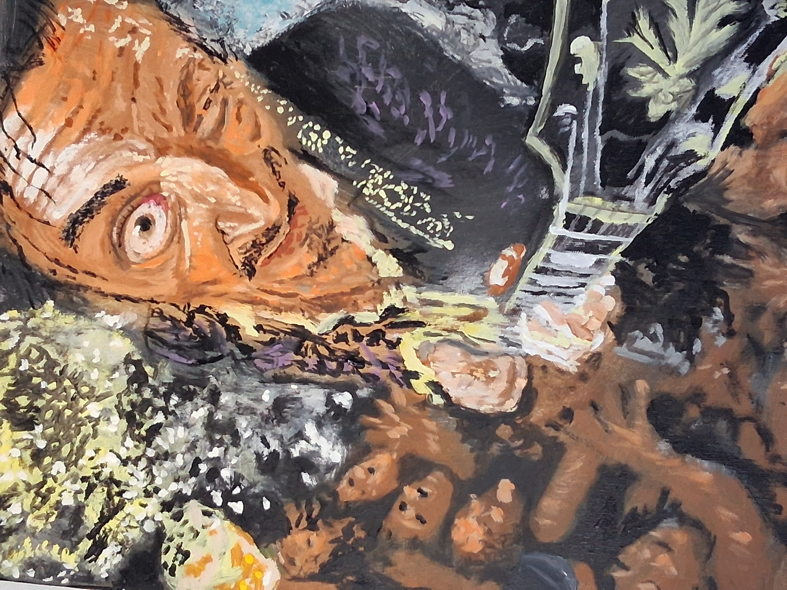
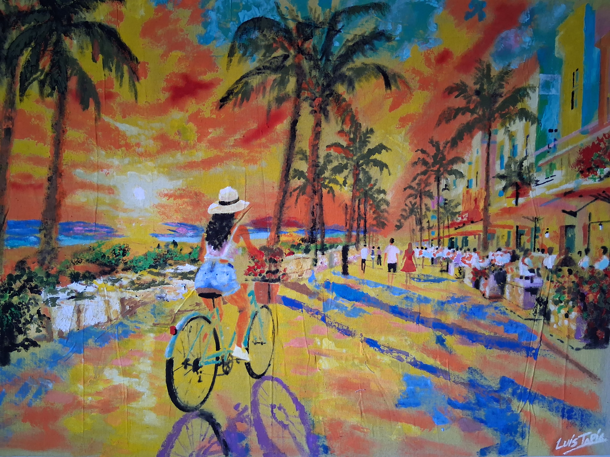

$800.00 USD
LUIS R. TAPIA · ORIGINAL PAINTINGS
Original paintings shaped by a love of music, movement, and bold visual storytelling. Each piece is painted by hand, with color and texture that reward a closer look.
THE COLLECTION
Explore each painting for its details and purchasing options. A selection of works is available through secure PayPal checkout.





No artworks match your search.
All prices are in USD. For shipping, current availability, and works without a purchase button, contact the artist before making arrangements. PayPal processes purchases securely.
MEET THE ARTIST
I make original paintings shaped by a love of music, movement, and bold visual storytelling. Each piece is painted by hand, with color and texture that reward a closer look.
Based in Lake Worth Beach, Florida.
QUESTIONS & INQUIRIES
For works without a purchase button, please confirm availability, pricing and shipping directly with Luis. A public contact address has not yet been provided for this website.
View artist's current gallery ↗